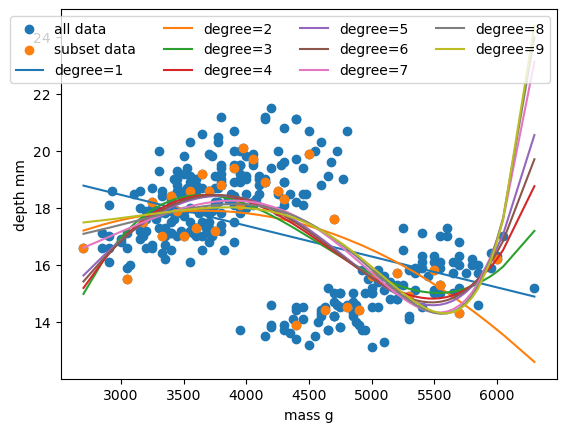

Supervised methods - Regression
Last updated on 2026-06-05 | Edit this page
Estimated time: 120 minutes
Overview
Questions
- What is supervised learning?
- What is regression?
- How can I model data and make predictions using regression methods?
Objectives
- Apply linear regression with Scikit-Learn to create a model.
- Measure the error between a regression model and input data.
- Analyse and assess the accuracy of a linear model using Scikit-Learn’s metrics library.
- Understand how more complex models can be built with non-linear equations.
- Apply polynomial modelling to non-linear data using Scikit-Learn.
Supervised learning
Classical machine learning is often divided into two categories – supervised and unsupervised learning.
For the case of supervised learning we act as a “supervisor” or “teacher” for our ML algorithms by providing the algorithm with “labelled data” that contains example answers of what we wish the algorithm to achieve.
For instance, if we wish to train our algorithm to distinguish between images of cats and dogs, we would provide our algorithm with images that have already been labelled as “cat” or “dog” so that it can learn from these examples. If we wished to train our algorithm to predict house prices over time we would provide our algorithm with example data of datetime values that are “labelled” with house prices.
Supervised learning is split up into two further categories: classification and regression. For classification the labelled data is discrete, such as the “cat” or “dog” example, whereas for regression the labelled data is continuous, such as the house price example.
In this episode we will explore how we can use regression to build a “model” that can be used to make predictions.
Regression
Regression is a statistical technique that relates a dependent variable (a label in ML terms) to one or more independent variables (features in ML terms). A regression model attempts to describe this relation by fitting the data as closely as possible according to mathematical criteria. This model can then be used to predict new labelled values by inputting the independent variables into it. For example, if we create a house price model we can then feed in any datetime value we wish, and get a new house price value prediction.
Regression can be as simple as drawing a “line of best fit” through data points, known as linear regression, or more complex models such as polynomial regression, and is used routinely around the world in both industry and research. You may have already used regression in the past without knowing that it is also considered a machine learning technique!

Linear regression using Scikit-Learn
We’ve had a lot of theory so time to start some actual coding!
The penguins dataset
We’re going to be using the penguins dataset of Allison Horst, published here, The dataset contains 344 size measurements for three penguin species (Chinstrap, Gentoo and Adélie) observed on three islands in the Palmer Archipelago, Antarctica.

The physical attributes measured are flipper length, beak length,
beak width, body mass, and sex. 
In other words, the dataset contains 344 rows with 7 features, i.e. 5 physical attributes, species and the island where the observations were made.
The penguin dataset is available through the Python plotting library Seaborn. Let’s start by loading in and examining this dataset, which contains a few hundred samples and a number of features and labels.
We can see that we have seven columns in total: 4 continuous
(numerical) columns named bill_length_mm,
bill_depth_mm, flipper_length_mm, and
body_mass_g; and 3 discrete (categorical) columns named
species, island, and sex. We can
also see from a quick inspection of the first 5 samples that we have
some missing data in the form of NaN values. Missing data
is a fairly common occurrence in real-life data, so let’s go ahead and
remove any rows that contain NaN values:
In this scenario we will train a linear regression model using
body_mass_g as our feature data and
bill_depth_mm as our label data. We will train our model on
a subset of the data by slicing the first 146 samples of our cleaned
data.
In machine learning we often train our models on a subset of data, for reasons we will explain later in this lesson, so let us extract a subset of data to work on by slicing the first 146 samples of our cleaned data and extracting our feature and label data:
PYTHON
import matplotlib.pyplot as plt
dataset_1 = dataset[:146]
x_data = dataset_1["body_mass_g"]
y_data = dataset_1["bill_depth_mm"]
plt.scatter(x_data, y_data)
plt.xlabel("mass g")
plt.ylabel("depth mm")
plt.show()
In this regression example we will create a Linear Regression model
that will try to predict y values based upon x
values.
In machine learning terminology: we will use our x
feature (variable) and y labels (“answers”) to train our
Linear Regression model to predict y values when provided
with x values.
The mathematical equation for a linear fit is y = mx + c
where y is our label data, x is our input
feature(s), m represents the gradient of the linear fit,
and c represents the intercept with the y-axis.
A typical ML workflow is as following:
- Decide on a model to use model (also known as an estimator)
- Tweak your data into the required format for your model
- Define and train your model on the input data
- Predict some values using the trained model
- Check the accuracy of the prediction, and visualise the result
We have already decided to use a linear regression model, so we’ll now pre-process our data into a format that Scikit-Learn can use.
PYTHON
import numpy as np
# sklearn requires a 2D array, so lets reshape our 1D arrays from (N) to (N,).
x_data = np.array(x_data).reshape(-1, 1)
y_data = np.array(y_data).reshape(-1, 1)Next we’ll define a model, and train it on the pre-processed data. We’ll also inspect the trained model parameters m and c:
PYTHON
from sklearn.linear_model import LinearRegression
# Define our estimator/model
model = LinearRegression(fit_intercept=True)
# train our estimator/model using our data
lin_regress = model.fit(x_data,y_data)
# inspect the trained estimator/model parameters
m = lin_regress.coef_
c = lin_regress.intercept_
print("linear coefs=",m, c)Now we can make predictions using our trained model, and calculate the Root Mean Squared Error (RMSE) of our predictions:
PYTHON
from sklearn.metrics import root_mean_squared_error
# Predict some values using our trained estimator/model.
# In this case we predict our input data to evaluate accuracy!
linear_data = lin_regress.predict(x_data)
# calculated a RMS error as a quality of fit metric
error = root_mean_squared_error(y_data, linear_data)
print("linear error=",error)Finally, we’ll plot our input data, our linear fit, and our predictions:
PYTHON
plt.scatter(x_data, y_data, label="input")
plt.plot(x_data, linear_data, "-", label="fit")
plt.plot(x_data, linear_data, "rx", label="predictions")
plt.xlabel("body_mass_g")
plt.ylabel("bill_depth_mm")
plt.legend()
plt.show()
Congratulations! We’ve now created our first machine-learning model
of the lesson and we can now make predictions of
bill_depth_mm for any body_mass_g values that
we pass into our model.
Let’s provide the model with all of the penguin samples and see how our model performs on the full dataset:
PYTHON
# Extract the relevant features and labels from our complete dataset
x_data_all = dataset["body_mass_g"]
y_data_all = dataset["bill_depth_mm"]
# sklearn requires a 2D array, so lets reshape our 1D arrays from (N) to (N,).
x_data_all = np.array(x_data_all).reshape(-1, 1)
y_data_all = np.array(y_data_all).reshape(-1, 1)
# Predict values using our trained estimator/model from earlier
linear_data_all = lin_regress.predict(x_data_all)
# calculated a RMS error for all data
error_all = root_mean_squared_error(y_data_all, linear_data_all)
print("linear error=",error_all)Our RMSE for predictions on all penguin samples is far larger than before, so let’s visually inspect the situation:
PYTHON
plt.scatter(x_data_all, y_data_all, label="all data")
plt.scatter(x_data, y_data, label="training data")
plt.plot(x_data_all, linear_data_all, label="fit")
plt.xlabel("mass g")
plt.ylabel("depth mm")
plt.legend()
plt.show()
Oh dear. It looks like our linear regression fits okay for our subset of the penguin data, and a few additional samples, but there appears to be a cluster of points that are poorly predicted by our model. Even if we re-trained our model using all samples it looks unlikely that our model would perform much better due to the two-cluster nature of our dataset.
This is a classic Machine Learning scenario known as over-fitting
We have trained our model on a specific set of data, and our model has learnt to reproduce those specific answers at the expense of creating a more generally-applicable model. Over fitting is the ML equivalent of learning an exam papers mark scheme off by heart, rather than understanding and answering the questions.
In this episode we chose to create a regression model for
bill_depth_mm versus body_mass_g predictions
without understanding our penguin dataset. While we proved we
can make a model by doing this we also saw that the model is
flawed due to complexity in the data that we did not account for.
With enough data and by using more complex regression models we
may be able to create a generalisable
bill_depth_mm versus body_mass_g model for
penguins, but it’s important to be aware that some problems simply might
not be solvable with the data quantity or features that you have.
In the next episode we will take a deeper dive into the penguin dataset as we attempt to create classification models for penguin species.
Repeating the regression with different estimators
The goal of this lesson isn’t to build a generalisable
bill_depth_mm versus body_mass_g model for the
penguin dataset - the goal is to give you some hands-on experience
building machine learning models with scikit-learn. So let’s repeat the
above but this time using a polynomial function.
Polynomial functions are non-linear functions that are commonly-used
to model data. Mathematically they have N degrees of
freedom and they take the following form
y = a + bx + cx^2 + dx^3 ... + mx^N. If we have a
polynomial of degree N=1 we once again return to a linear
equation y = a + bx or as it is more commonly written
y = mx + c.
We’ll follow the same workflow from before:
- Decide on a model to use model (also known as an estimator)
- Tweak your data into the required format for your model
- Define and train your model on the input data
- Predict some values using the trained model
- Check the accuracy of the prediction, and visualise the result
We’ve decided to use a Polynomial estimator, so now let’s tweak our
dataset into the required format. For polynomial estimators in
Scikit-Learn this is done in two steps. First we pre-process our input
data x_data into a polynomial representation using the
PolynomialFeatures function. Then we can create our
polynomial regressions using the LinearRegression().fit()
function as before, but this time using the polynomial representation of
our x_data.
PYTHON
from sklearn.preprocessing import PolynomialFeatures
# Requires sorted data for ordered polynomial lines
dataset = dataset.sort_values("body_mass_g")
x_data = dataset["body_mass_g"]
y_data = dataset["bill_depth_mm"]
x_data = np.array(x_data).reshape(-1, 1)
y_data = np.array(y_data).reshape(-1, 1)
# create our training subset from every 10th sample
x_data_subset = x_data[::10]
y_data_subset = y_data[::10]
# create a polynomial representation of our training data
poly_features = PolynomialFeatures(degree=3)
x_poly = poly_features.fit_transform(x_data_subset)We convert a non-linear problem into a linear one
By converting our input feature data into a polynomial representation we can now solve our non-linear problem using linear techniques. This is a common occurence in machine learning as linear problems are far easier computationally to solve. We can treat this as just another pre-processing step to manipulate our features into a ML-ready format.
We are now ready to create and train our model using our polynomial feature data.
PYTHON
# Define our estimator/model(s) and train our model
poly_regress = LinearRegression()
poly_regress.fit(x_poly,y_data_subset)We can now make predictions using our full dataset. As we did for our training data, we need to quickly transform our full dataset into a polynomial expression. Then we can evaluate the RMSE of our predictions.
PYTHON
# make predictions using all data, pre-process data too
x_poly_all = poly_features.fit_transform(x_data)
poly_data = poly_regress.predict(x_poly_all)
poly_error = root_mean_squared_error(y_data, poly_data)
print("poly error=", poly_error)Finally, let’s visualise our model fit on our training data and full dataset.
PYTHON
plt.scatter(x_data, y_data, label="all data")
plt.scatter(x_data_subset, y_data_subset, label="subset data")
plt.plot(x_data, poly_data, "r-", label="poly fit")
plt.xlabel("mass g")
plt.ylabel("depth mm")
plt.legend()
plt.show()
Exercise: Vary your polynomial degree to try and improve fitting
Adjust the degree=3 input variable for the
PolynomialFeatures function to change the degree of
polynomial fit. Can you improve the RMSE of your model?
Let’s plot all the fitted polynomials of degree one to nine, alongside the data as before. We can also calculate the root mean squared error of each polynomial fit and print the best.
PYTHON
#plot the data
plt.scatter(x_data, y_data, label="all data")
plt.scatter(x_data_subset, y_data_subset, label="subset data")
#name a variable 'best' to store the best RMSE we find.
best = np.inf
#loop through and plotpolynomials of degree one to nine,
#reusing the earlier code.
for degree in range(1,10):
poly_features = PolynomialFeatures(degree=degree)
x_poly = poly_features.fit_transform(x_data_subset)
# Define our estimator/model(s) and train our model
poly_regress = LinearRegression()
poly_regress.fit(x_poly,y_data_subset)
# make predictions using all data, pre-process data too
x_poly_all = poly_features.fit_transform(x_data)
poly_data = poly_regress.predict(x_poly_all)
poly_error = root_mean_squared_error(y_data, poly_data)
print("degree=",degree,"; poly error=", poly_error)
#find best degree polynomial
if poly_error < best:
best = poly_error
#create a variable called degree to store the best polynomial degree.
best_degree = degree
plt.plot(x_data, poly_data, "-", label="poly fit, degree="+str(degree))
#print our best degree polynomial
print("Best degree was",best_degree,"with poly error=",best)
plt.xlabel("mass g")
plt.ylabel("depth mm")
plt.legend(ncol=4)
plt.show()
Exercise: Now try using the SplineTransformer to create a spline model
The SplineTransformer is another pre-processing function that behaves
in a similar way to the PolynomialFeatures function. Import the package
sklearn.preprocessing.SplinTransformer and adjust your
previous code to use the SplineTransformer. Can you improve the RMSE of
your model by varying the knots and degree
functions? Is the spline model better than the polynomial model?
PYTHON
from sklearn.preprocessing import SplineTransformer
#plot the data
plt.scatter(x_data, y_data, label="all data")
plt.scatter(x_data_subset, y_data_subset, label="subset data")
#name a variable 'best' to store the best RMSE we find.
best = np.inf
#loop through and plotpolynomials of degree one to nine,
#reusing the earlier code.
for knot in range(2,5):
for degree in range(1,10):
spline_features = SplineTransformer(n_knots=knot, degree=degree)
x_spline = spline_features.fit_transform(x_data_subset)
# Define our estimator/model(s) and train our model
spline_regress = LinearRegression()
spline_regress.fit(x_spline,y_data_subset)
# make predictions using all data, pre-process data too
x_spline_all = spline_features.fit_transform(x_data)
spline_data = spline_regress.predict(x_spline_all)
spline_error = root_mean_squared_error(y_data, spline_data)
print("degree=",degree,"; slpine error=", spline_error)
#find best degree polynomial
if spline_error < best:
best = spline_error
#create a variable called degree to store the best polynomial degree.
best_degree = degree
best_knot = knot
plt.plot(x_data, spline_data, "-", label="spline fit, degree="+str(degree)+" knot="+str(knot))
#print our best degree polynomial
print("Best degree/knot was",best_degree,best_knot,"with poly error=",best)
plt.xlabel("mass g")
plt.ylabel("depth mm")
plt.legend(ncol=4)
plt.show()The above line replaces the PolynomialFeatures function.
It takes in an additional argument knots compared to
PolynomialFeatures. It’s best performance is comparable to
that of the PolynomialFeatures in this example (error of
1.613 fo SplineTransformer and 1.604 for PolynomialFeatures).
- Scikit-Learn is a Python library with lots of useful machine learning functions.
- Scikit-Learn includes a linear regression function.
- Scikit-Learn can perform polynomial regressions to model non-linear data.